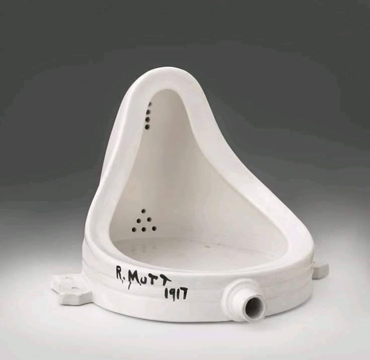
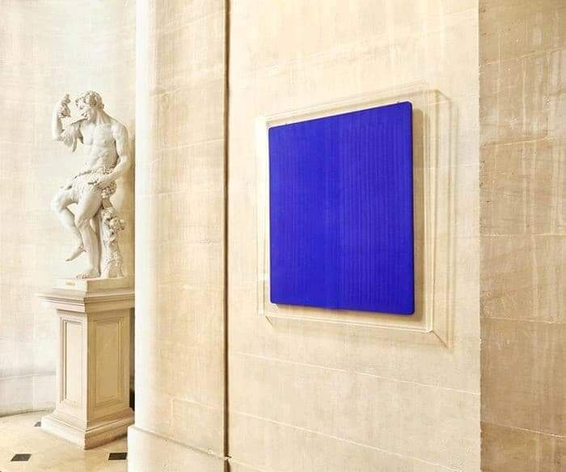
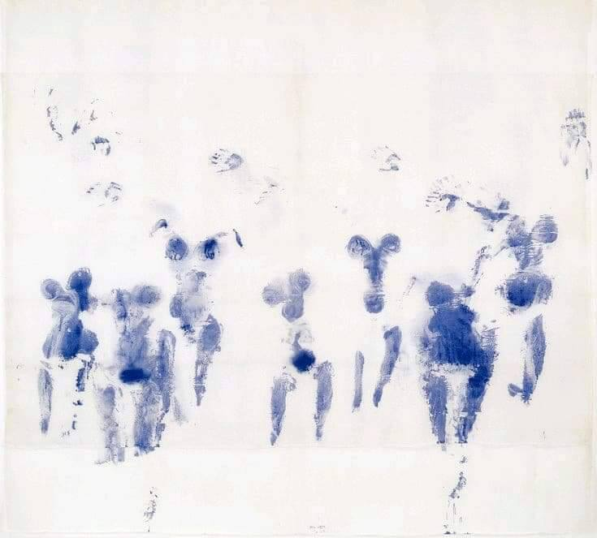
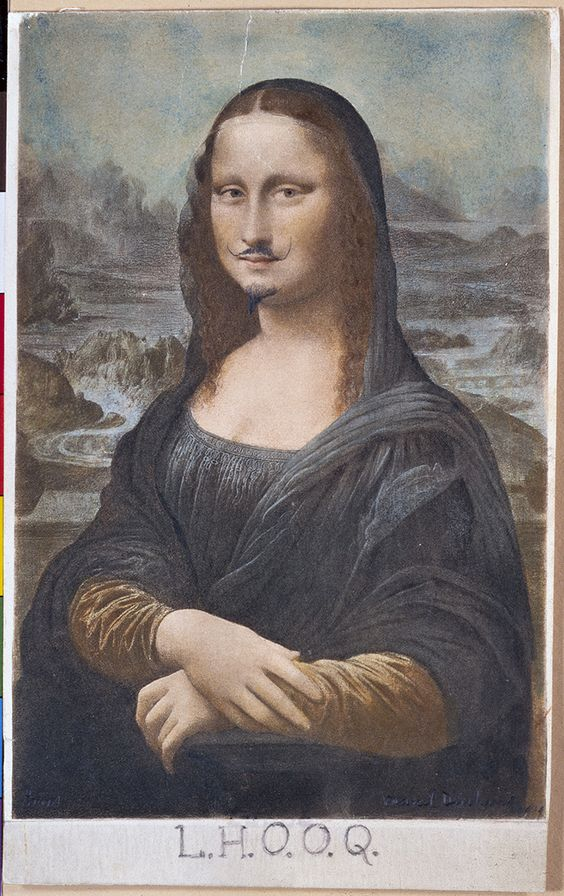
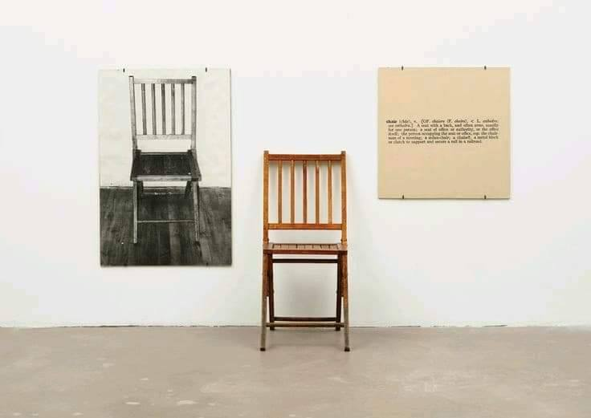
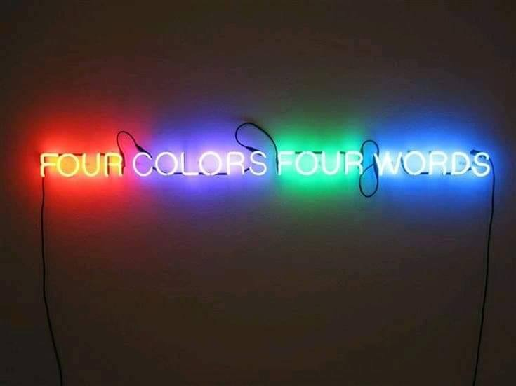
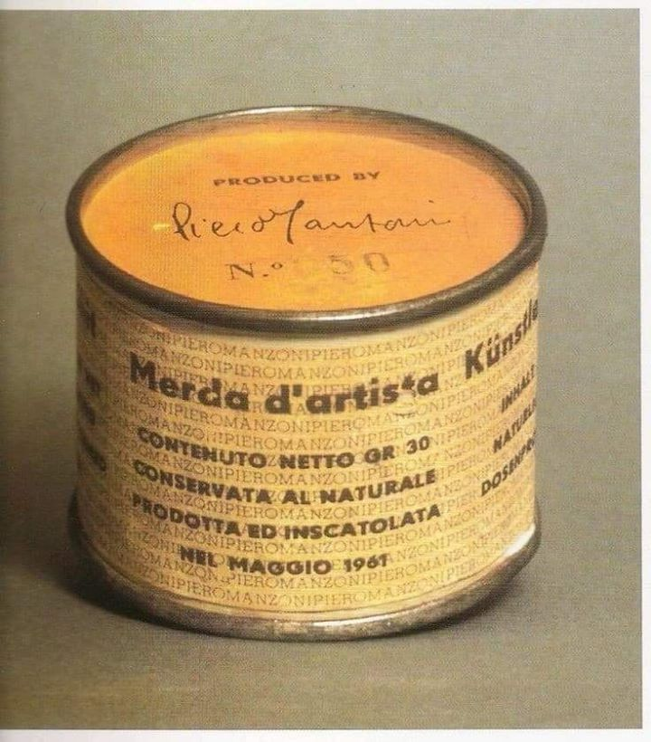

L’art conceptuel est un mouvement artistique contemporain né dans les années soixante. Il est apparu pour la première fois en 1961 avec Fluxus Henry Flynt, qui l'a utilisé pour désigner un art dont la principale caractéristique est l'emploi du langage.
Ce courant est plus défini par l’idée que par l’œuvre elle-même, ce qui veut dire que le travail de l’esprit prend une plus grande place que l’esthétisme de l’objet. Joseph Kosuth, artiste américain et chef de l’art conceptuel, le définit comme étant «L'art comme idée en tant qu'idée.» Il date aussi l’origine de ce mouvement des «ready-made», qui sont des objets du quotidien qu’un artiste s’approprie pour les détourner de leur fonction originale tout en les laissant tels quels (Fontaine –Marcel Duchamp), ainsi que du suprématisme (carré blanc sur fond blanc –Kasimir Malevitch). for a perfect dance floor and kept most attendees on their feet all night long.
On peut diviser l’art conceptuel en deux parties : La première est fortement liée aux mathématiques, la sémiologie et la sociologie, tandis que la deuxième penche plus pour l’imagination et le surréalisme. Toutefois, quelques artistes ont réussi à mélanger ces deux tendances, comme Vito Accoci ou Robert Smithson.
Les artistes de ce mouvement sont nombreux, mais certains se sont fait remarquer plus que d’autres. On ne peut par exemple pas parler de ce courant sans citer Yves Klein, artiste et plasticien français, qui s’est fait connaitre en 1995 grâce à une exposition surprenante: des tableaux recouverts d’une seule teinte. Cependant, sa passion pour les couleurs, et plus particulièrement pour le bleu, l'a poussé vers 1956 à créer sa propre nuance de bleu, avec l’aide de son marchand de couleurs. Un bleu outremer assez particulier, puisqu’il a été mélangé à un fixatif qui lui donne un aspect mat, poudreux, et pur, et qui sera par la suite baptisé «bleu IKB». Mais l’artiste ne s’est pas arrêté pas là; en 1960, lors d’une exposition, il a invité des modèles dénudés à s’enduire de ce fameux bleu IKB, avant d’appliquer leurs corps sur des toiles immaculées, créant ainsi des œuvres insolites. On raconte même qu’il aurait ajouté aux cocktails de ses invités un produit qui colorerait l’urine en bleu.
 Qui dit art conceptuel dit aussi Marcel Duchamp. Peintre, plasticien et homme de lettres franco-américain, il est connu pour ses œuvres osées, provocatrices. On en cite par exemple la copie de la Joconde, sur laquelle il a dessiné une moustache et un bouc, et au dessous de laquelle il est marqué «L.H.O.O.Q », qu’on peut à la fois lire «elle a chaud au cul» et qui est aussi un homophone de «look». Il est aussi connu pour son œuvre «Fontaine », qui n’est autre qu’un urinoir renversé sur lequel Duchamp a signé «R. Mutt» (sans jeux de mots douteux cette fois).
Sans oublier bien sur une des œuvres les plus emblématiques de l’art contemporain, «one and three chairs» de l'artiste américain Joseph Kosuth. Elle consiste en une chaise banale, la photographie de cette chaise en noir et blanc et en taille réelle, et le photostat de la définition agrandie du mot «chaise». Toujours avec Kosuth, on peut aussi citer «four colors, four words», qui est, comme son nom l’indique, quatre mots de quatre couleurs différentes.
 Sans oublier bien sur une des œuvres les plus emblématiques de l’art contemporain, «one and three chairs» de l'artiste américain Joseph Kosuth. Elle consiste en une chaise banale, la photographie de cette chaise en noir et blanc et en taille réelle, et le photostat de la définition agrandie du mot «chaise». Toujours avec Kosuth, on peut aussi citer «four colors, four words», qui est, comme son nom l’indique, quatre mots de quatre couleurs différentes.
Les œuvres de ce mouvement sont nombreuses et très intéressantes à étudier. Ce qu’il faut donc retenir de la notion d’art conceptuel est qu’il dépasse l’appréciation esthétique. Basé sur la tautologie, il tourne autour d’une seule et unique question «Qu’est-ce que l’art?».